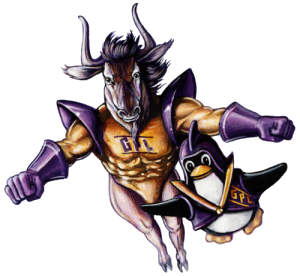
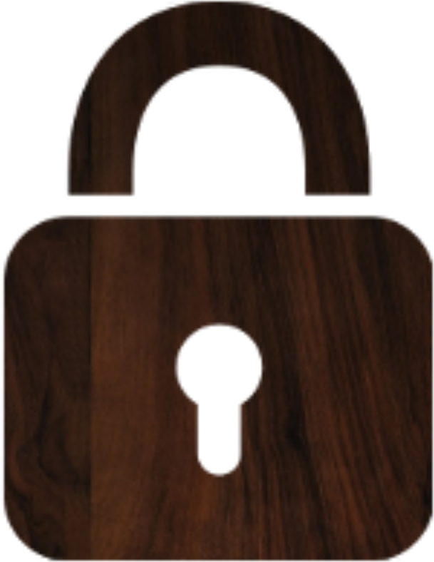
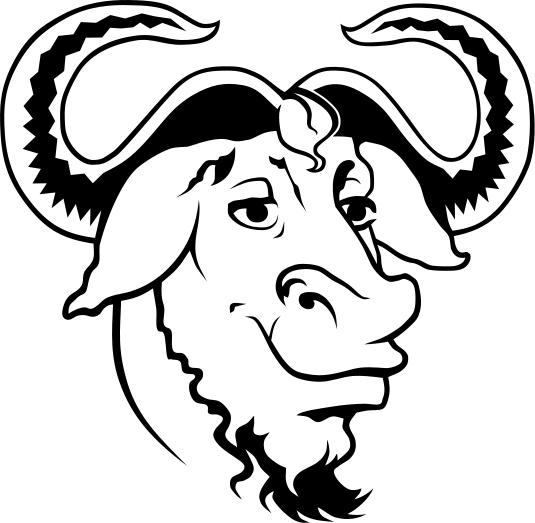

Logiciels libres et propriétaires, quelles différences ?

Antoine BOILEAU - Hugo COURTIAL TS2
Introduction
Dans les médias, sur Internet, ou dans une discussion, on entend souvent parler de logiciel dit "libre", "d'open source", ou encore de logiciel "propriétaire" ou "privateur", sans forcément comprendre.
Ainsi, qu'est ce qu'un logiciel libre? Comment un logiciel devient-il propriétaire? Et quelles sont les différences?
Un logiciel peut alors être vu comme un algorithme très élaboré. Les systèmes d'exploitation sont des logiciels.
On distingue alors deux aspects d'un logiciel : son utilisation et sa séquence d'instructions (appelé "code source").
Le logiciel propriétaire ou privateur

Un logiciel dit "propriétaire" ou "privateur" est un logiciel (généralement vendu) dont l'accès au code source est restreint et/ou son utilisation est régie par un contrat rédigé par le fournisseur du logiciel.
Concrètement, cela veut dire que l'utilisateur ne peut pas faire tout ce qu'il veut avec le logiciel : le revendre, le modifier...
Les développeurs sont généralement rémunérés en vendant des licences d'utilisation.
"Propriétaire" indique que le logiciel appartient à une personne ou une entité juridique telle qu'une société, et non à l'utilisateur. Une licence d'utilisation est accordée à l'utilisateur. Cela peut aussi indiquer que la technologie derrière le logiciel est brevetée.
"Privateur", moins fréquemment utilisé, indique que l'utilisateur est privé de ses droits. En effet, il ne décide pas des droits qu'il lui sont accordés. Il se soumet alors aux choix du fournisseur du logiciel, pour le meilleur ou pour le pire.
Exemples de logiciels propriétaires : Microsoft Windows, Adobe Photoshop, Apple iTunes, Steam (VALVe)
(note: Bien que le client Steam soit propriétaire, certains jeux (Teeworlds par exemple) ne le sont pas.)
Le logiciel libre ("Free Software")

Un logiciel dit "libre" est un logiciel qui respecte les libertés de l'utilisateur, en suivant la philosophie du libre.
Le concept du logiciel libre fut d'abord imaginé par Richard M. Stallman, fondateur du projet GNU. Ce projet consiste à créer un écosystème logiciel entièrement libre, dont la principale oeuvre est le système d'exploitation GNU/Linux.
Selon la philosophie du projet GNU, c'est l'utilisateur qui contrôle le logiciel, et pas l'inverse. Ainsi, l'utilisateur peut faire ce qu'il veut : le redistribuer, le modifier, l'améliorer...
Les développeurs sont généralement rémunérés à l'aide de donations ou de sponsors.
Des licences ont été écrites afin que chacun puisse publier légalement son travail en suivant la philosophie du libre : la GPL, les licences Creative Commons, et plus encore. Certains logiciels deviennent libres alors qu'ils étaient initialement propriétaires : c'est le cas par exemple de Blender ou de DOOM.
Une organisation fut créée afin de défendre et de promouvoir cette cause : la Free Software Foundation, ou FSF.
Exemples de logiciels libres : Mozilla Firefox, DOOM, Open/LibreOffice
(note: Le moteur du jeu DOOM est libre, mais le contenu du jeu original ne l'est pas.)
Quelle est la différence entre logiciel libre et Open Source ?
Vous avez peut-être déjà entendu ce terme, ou déjà vu ce logo.
"Open Source" signifie que le code source du logiciel est ouvert, néanmoins, aucune autre garantie n'est apportée.
La FSF déconseille l'utilisation du terme car bien que le code source soit ouvert, les idées et les libertés défendues par le logiciel libre ne sont pas forcément présentes.
Ainsi, il est recommandé de dire simplement "logiciel libre".
Conclusion
Alors, il existe une différence éthique entre l'utilisation d'un logiciel libre et l'utilisation d'un logiciel propriétaire.
L'utilisation d'un logiciel propriétaire peut procurer un plus grand confort a l'utilisateur au détriment de ses libertés.
L'utilisation d'un logiciel libre permet de supporter la philosophie derrière. Dans ce cas là l'utilisateur est maître du logiciel.